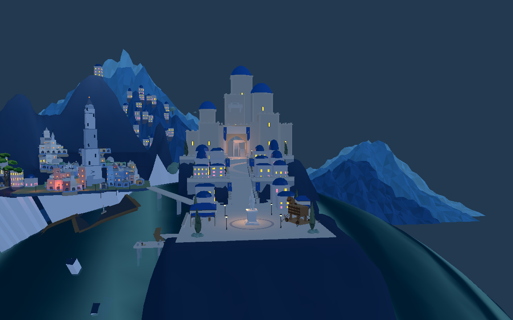
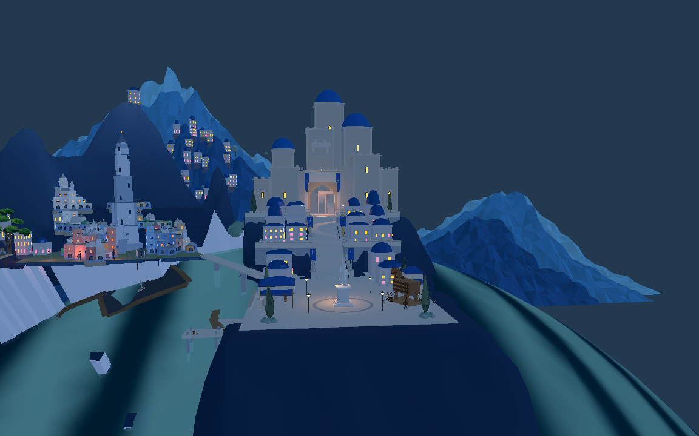
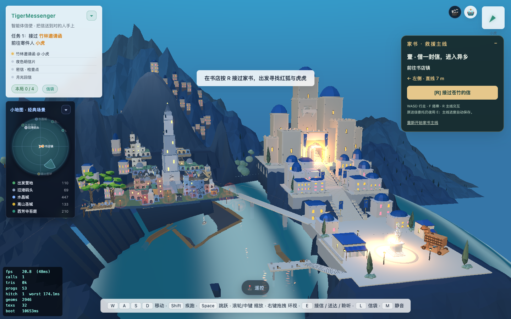

按现有WFC建筑占地及桥头、旧港落脚点生成外缘。面积2282→1717.91；184个占地、736个四角采样全部有平台支撑。新增与撤回建筑时轮廓和编辑地面同步通过。



网页截图含运行中的动态光照，与此前亮度不同；面积变化以几何和支撑检查为准。本轮未修改灯光。
已同步Godot，原短剑兵734点主堡路线通过。台地下面的平直山岸、旧纳沃纳结构和目标图整体差距仍未完成；这不是整座旧城验收。
实际占地与编辑检查 · Godot通路 · 进入8931